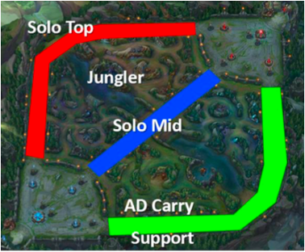

# If you need to install any of these uncomment the line below
# install.packages(c("dplyr,"tidyr", "vcd"))
library(dplyr)
library(tidyr)
library(vcd)Comparing the gender and roles of champions in League of Legends
Data Visualization
Chisquare Test for Association
Categorical Variables
A tutorial on the Chi-square test for association using gender and roles of champions in League of Legends.
Please note that these material have not yet completed the required pedagogical and industry peer-reviews to become a published module on the SCORE Network. However, instructors are still welcome to use these materials if they are so inclined.
Welcome Video
For a humourous 3-minute introduction to League of Legends, please watch this video by Kola, a League of Legends coach with Coachify.
Introduction
League of Legends (LoL) is a 5 v. 5 multiplayer online battle arena (MOBA) game developed by Riot Games. In this game, players assume the role of a “champion” with unique abilities and engage in intense battles against a team of other players or computer-controlled champions.
In standard play on Summoner’s Rift, champions are typically assigned to roles that correspond to different lanes/positions on the map—most commonly Top, Jungle, Mid, Bottom (AD Carry), and Support (see Figure 1). Champions assigned to each position have distinct strategic responsibilities (for example, the Jungler moves between lanes to secure objectives, while the Support focuses on protecting and enabling teammates). Champions also have narrative identities that include attributes such as gender, and players often choose champions based on a mix of gameplay fit (role/position) and character preference.

In this module, we will investigate whether the distribution of genders differs across roles.
The majority of the champion metadata for this module comes from LoLdleData, an open GitHub project that programmatically compiles “extra” champion attributes that aren’t conveniently available from the official Riot API endpoints (e.g., gender, game lore region, and release year).
The LoLdleData is supplemented with laning information taken from the fan-site Mobalytics (based on patch 16.2).
Because these are community-maintained, derived datasets, the gender and lane labels should be treated as typical classifications rather than official ground truth. In particular, lane/role assignments reflect a snapshot based on patch 16.2, and many champions can be played effectively in multiple lanes depending on strategy, player skill, and balance changes.
Data
The lol_gender_lanes_patch16.2.csv dataset contains 172 rows, one per League of Legends champion, and includes basic metadata used to study the relationship between champion gender and typical lane/role (based on patch 16.2). Several metadata fields are included for context and potential extensions, but the primary variables for this module are gender and lane.
Download Data: lol_gender_lanes_patch16.2.csv
Variable Descriptions
| Variable | Description |
|---|---|
| name | Champion name |
| title | Champion title/epithet (e.g., “the Sinister Blade”) |
| resource | Champion’s primary in-lore “resource” or energy system used for abilities (most are “Mana”) |
| genre | Broad gameplay archetype label for the champion (Fighter, Assassin, etc.) |
| skinCount | Number of available skins for the champion at the time the dataset was compiled |
| gender | Champion gender label used for this analysis (male, female, NA) |
| attackType | Champion’s typical attack style (close vs. range) |
| releaseDate | Champion release date (year) |
| region | Champion’s primary lore region/faction (e.g., piltover, noxus, etc.) |
| lane | Champion’s typical lane/role assignment for Summoner’s Rift (adc, jungle, mid, support, top) |
Data Sources
Analyzing Associations between Categorical Variables
Motivating question
In this module, we investigate the following research question:
Is champion gender associated with typical lane/role in League of Legends?
In other words, does the distribution of champion genders differ across the five Summoner’s Rift roles (Top, Jungle, Mid, Bottom/AD Carry, Support)?
Prepping Workspace
To begin, we will need to load the packages we will be using. For this analysis, you’ll need to load the dplyr, tidyr, and vcd packages.
Click to reveal code
Now we should read in the data. Save the csv file to your computer and read it in. For convenience, we will all store it as an object named lol_genders.
Click to reveal code
# You might need to change the file path to match your setup.
lol_genders <- readr::read_csv("lol_gender_lanes_patch16.2.csv")Exploratory Analysis
Before attempting to conduct a formal statistical inference on these data, we will start with some numerical and graphical summaries to better understand the data.
Univariate Analyses
We’ll first investigate each of the main variables of interest (gender and lane) to familiarize ourselves with them.
- Start by make a table that displays the number of champions associated with each gender.
Question: How many champions are included in this table? How many rows are there in the
lol_gendersdataset?
Question: What might be happening?
Before continuing, lets remove these two champions that don’t have an assigned gender.
If you are curious which champions they are, run the following code.
lol_genders |>
filter(is.na(gender))To remove them we can use the drop_na function from the tidyr package.
lol_MFonly <- lol_genders |> drop_na(gender)Now, we’ll investigate the the lane variable. Be sure to use the trimmed dataset that excluded the champions that didn’t have genders assigned to them.
table(lol_MFonly$lane)Bivariate Analysis
Two-ways tables
Bar charts
Mosaic Plots
Inferential Statistics
Overview of Chi-Square Test
Give big picture of chi-square test. Maybe outline the steps and then give the details?
Hypotheses
Computing the Chi-square test statistic and p-value
Interpreting Results
Report and interpret an effect size for association (e.g., Cramér’s V).
Use residuals / cell contributions to identify which category combinations drive the association.
Extensions?
- Simulated p-value
- Other ways to interpret results
- Other variables? (maybe the genre?)
- Other games?
Optional: Instructor Materials for Introductory Statistics Courses
Need to provide a trimmed down version for intro stat classes. Maybe more
Additional Reading
If you are interested in learning more about how gender impacts game play and design in League of Legends, check out these articles.
A Survey of League of Legends Champions from a Gendered Perspective by Sarah Beck
an analysis of gender and roles of league of legends champions by Cheryl-Jean Leo
Investigating Match Performance Differences between Genders of League of Legends Champions by Ivan Ramler, Choong-Soo Lee, and Sarah Strong